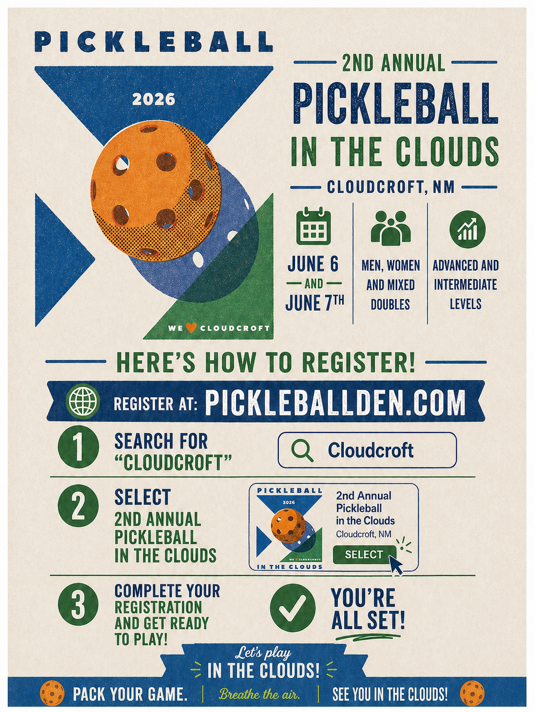

A visitor's month-by-month guide to the festivals, race weekends, and holiday
events that shape the year.
▲ 8,676 ft★ 12 marquee weekendsMay → December
On This Page
01 — The Calendar
Cloudcroft 2026, Month by Month
From the first spring art weekend in May to the marquee Christmas Village block
in December, these are the events worth planning a Cloudcroft trip around in 2026. Sourced from the
Chamber calendar; race dates verified against live registration pages.
May23–24
Mayfair Juried Artshow
May 23–24, 2026
Best for: art buyers · couples · weekend visitors
The first strong spring event on the 2026 Chamber calendar — a good reason to come up
before the heavier summer crowds. Pair it with Burro Avenue shopping and a slow lunch in
town.
Jun 6–7
2nd Annual Pickleball in the Clouds
June 6–7, 2026
Best for: pickleball players · doubles teams · active weekend visitors

A two-day doubles tournament held in Cloudcroft on Saturday, June 6 and Sunday, June 7,
2026. Brackets cover Men's, Women's, and Mixed Doubles at Intermediate and Advanced
skill levels — a real reason to plan a cool-mountain weekend around competitive play.
How to register:
Visit pickleballden.com.
Search for "Cloudcroft."
Select "2nd Annual Pickleball in the Clouds" and complete registration.
"Pack your game. Breathe the air. See you in the clouds!"
Venue, entry fees, and the schedule of play are posted on the registration site — check
PickleballDen.com for the latest details.
Jun13–14
BeerFest
June 13–14, 2026
Best for: adults · groups · summer-weekend visitors
One of the bigger early-summer social weekends. Cloudcroft at its more festive and
crowded — expect a stronger weekend-town atmosphere than on a quiet weekday.
Jun13
Trails & Rails
June 13, 2026
Best for: runners · active visitors · race-weekend travelers
A strong reason to plan an outdoor weekend around the trestle area and Cloudcroft trail
culture. It adds real event energy without requiring a full ultra-distance commitment.
Jul 11–12
Christmas in July
July 11–12, 2026
Best for: families · first-time visitors · classic Cloudcroft summer
One of the most recognizable Cloudcroft weekends. It leans into the town's cool-weather
identity and works for visitors who want a broad "mountain town in summer" experience
rather than one niche activity.
Jul 11–12
Cloudcroft July Jamboree
July 11–12, 2026 · Zenith Park
Best for: families · art & craft browsers · holiday-weekend
visitors
An annual arts-and-crafts show with local and regional artists and crafters at Zenith
Park. Free public admission, local nonprofit food sales, restrooms on-site, and one
stage of variety entertainment. Runs the same weekend as Christmas in July, so the two
pair naturally.
Aug 7–9
Art and Wine in the Cool Pines
August 7–9, 2026
Best for: adults · art shoppers · couples · repeat visitors
One of the strongest event weekends if you want Cloudcroft at its more polished and
browse-friendly. It pairs naturally with galleries, shops, and slower in-town time.
One of the most serious athletic events on the calendar. Even if you're not racing, it's
a good weekend for people who like trail-running culture and an active town feel.
Sep 5–6
Labor Day Hoopla
September 5–6, 2026
Best for: holiday-weekend visitors · families · easy festival weekends
One of the most practical event weekends because Labor Day already gives many people time
to travel. Expect more town activity and less quiet than on a normal September weekend.
Sep 19
Lumberjack Day
Saturday, September 19, 2026 · 33rd year
Best for: families · spectators · first-time visitors who want a
Cloudcroft-specific scene
Free to watch, with arts, crafts, and food vendors on-site. Competitor registration
begins at 8 AM, competition starts at 9 AM. Held at 1920 1/2 U.S. Highway 82.
Contact: cloudcroftlumberjackday@gmail.com
or 575-921-4737.
Oct 17
Cactus to Cloud Sky Race
October 17, 2026
Best for: serious runners · ambitious outdoor visitors · shoulder
season
The strongest October event we could verify. More specialized than the broad Chamber
festival weekends, but a real draw if you like high-effort race events and cooler fall
conditions.
Fall TBA
Haunted Village
Fall 2026 · date TBA
Best for: families · Halloween-season visitors · costume crowd
Cloudcroft's family-friendly Halloween-season community event. The current-year date
wasn't on the Chamber calendar at publication — confirm with the
Chamber events page
closer to fall.
Nov27–28
Christmas Market
November 27–28, 2026
Best for: holiday shoppers · families · early Christmas atmosphere
The cleanest late-November event on the Chamber calendar. A good fit if you want
Cloudcroft leaning into holiday mode without waiting for mid-December.
Dec11–19
Mountain Christmas Village
December 11–19, 2026
Best for: families · holiday travelers · peak seasonal atmosphere
The marquee Christmas-period event block. If you want the strongest holiday feel in
Cloudcroft, this is the one to plan around. Also one of the better reasons to book
lodging early.
02 — Editor's Picks
Best Event Weekends by Visitor Type
Not every weekend works for every traveler. These are the matches we'd start with
based on who's coming and what kind of trip they want.
First-Time Visitors
Christmas in July, Labor Day Hoopla, Mountain Christmas Village. Broadest
Cloudcroft feel and the lowest barrier to entry.
Couples
Art and Wine in the Cool Pines, Mayfair Juried Artshow, Christmas Market.
Slower shopping, strolling, and dinner-centered weekends.
Families
Christmas in July, Labor Day Hoopla, Mountain Christmas Village. The safest
"there will be enough going on" answers.
Runners
Trails & Rails, Cloudcroft Ultra, Cactus to Cloud Sky Race. The clearest
race-centered reasons to plan a trip.
Town Lively, Not Niche
Christmas in July and Labor Day Hoopla. Festive town atmosphere without one
specific crowd dominating the weekend.
03 — After Dinner
Where to Find Live Music in Cloudcroft
Cloudcroft has live music — but it's not a nightly, city-style scene. The right
way to think about it: shows turn up at a handful of venues, on event weekends, and in seasonal
rotations. Lineups change often, so check close to your trip.
Cloudcroft Brewing Company
The strongest current live-music bet in town. Current Instagram posts show the brewery
announcing 2026 lineups, and Cloudcroft Reader's summer guide flagged music every weekend
all summer 2025.
Instagram.
The Distillery
Cloudcroft Reader's summer guide grouped The Distillery with Cloudcroft Brewing as a regular
live-music spot — one of the clearest local sources putting it on the repeat-music list.
Noisy Water Winery Cloudcroft
Another likely music stop, especially for smaller live sets. Public venue profiles show
activity, though current published schedules are thinner than at the brewery.
Gigtown profile.
The Lodge at Cloudcroft
Not a weekly music venue in the same way the brewery is, but local coverage shows the Lodge
hosting music during special events — jamborees, lawn events, and Lodge-specific weekends.
Chamber & festival weekends
Live music also shows up through the event calendar itself — art shows, festivals, and
Pavilion-based weekends where music is part of the draw.
Chamber events.
Music here is small-scale, close to the audience, tied
to a venue that's also serving food or drinks, better on weekends than midweek, and more casual
than ticketed-concert formal. If you want a big-headliner room, you're in the wrong town. If you
want to sit outside with a drink and hear local or regional musicians on a low-pressure mountain
evening, Cloudcroft fits well.
Plan Your Event Weekend
Pick a weekend that fits your trip and book early — the marquee weekends (Christmas in July, Labor Day,
Mountain Christmas Village) sell out lodging fast.